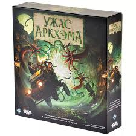

Я обожаю погружаться в миры, созданные разработчиками, будь то фэнтезийные королевства, космические приключения или исторические эпохи. В этой теме я поделюсь своими любимыми настольными играми, расскажу о том, что делает их особенными, и почему они занимают важное место в моем сердце. Присоединяйтесь к этому увлекательному путешествию в мир настольных игр, где каждый найдет что-то для себя!
Настолки, которые я обожаю и не только...
Боевые маги
это настольная игра, в которой игроки берут на себя роли магов, сражающихся друг с другом в различных битвах и дуэлях.
Максимум Апокалипсис
это кооперативная настольная игра, в которой игроки берут на себя роли различных героев, пытающихся выжить в мире после апокалипсиса.
Манчкин
это настольная игра, созданная Стивеном Джексоном, которая пародирует классические ролевые игры и фэнтезийные приключения.

Ужас Аркхэма
это кооперативная настольная игра в жанре ужасов и мистики, основанная на произведениях Говарда Лавкрафта и его мифах.
это настольная игра, которая сочетает в себе элементы тактики и взаимодействия между игроками.